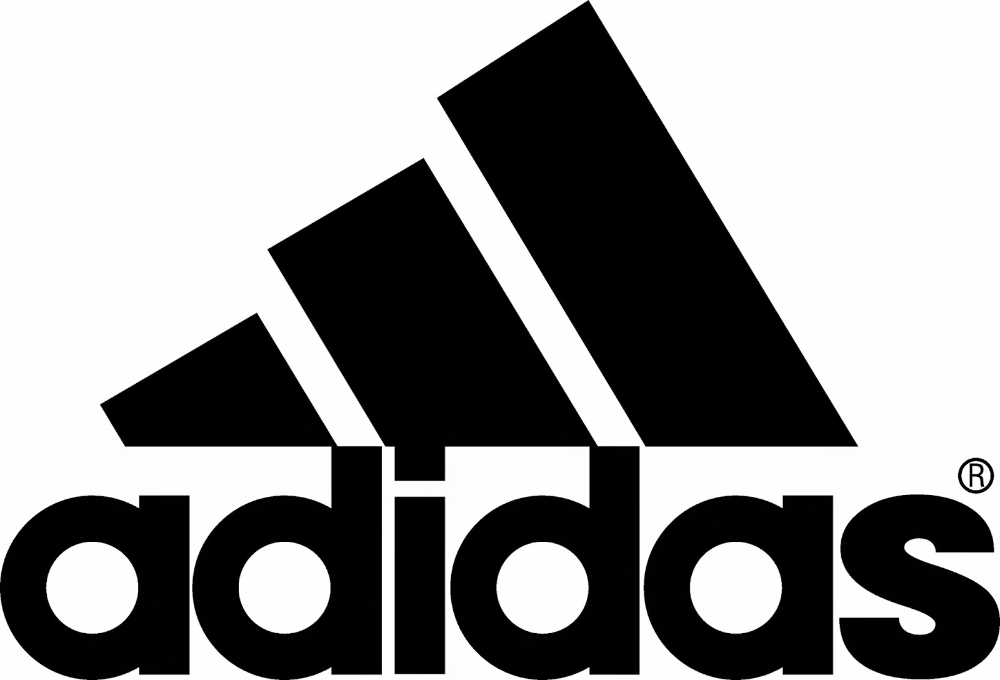

Elisa Gonzalez Caseres
ADIDAS
Adidas (estilizado como adidas) es una compañía multinacional alemana nacida en el año 1949 dedicada a la fabricación de calzado, ropa deportiva y otros productos relacionados con el deporte y la moda (bolsos, camisas, relojes, lentes, etc.), y patrocinadora de eventos y figuras deportivas a nivel mundial.
